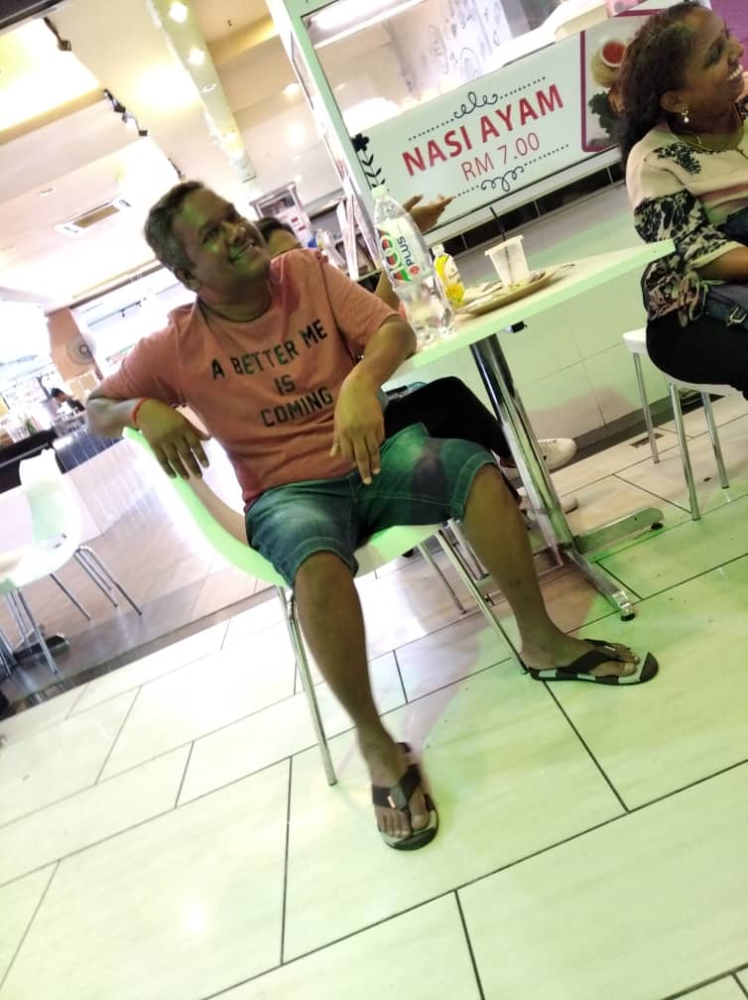
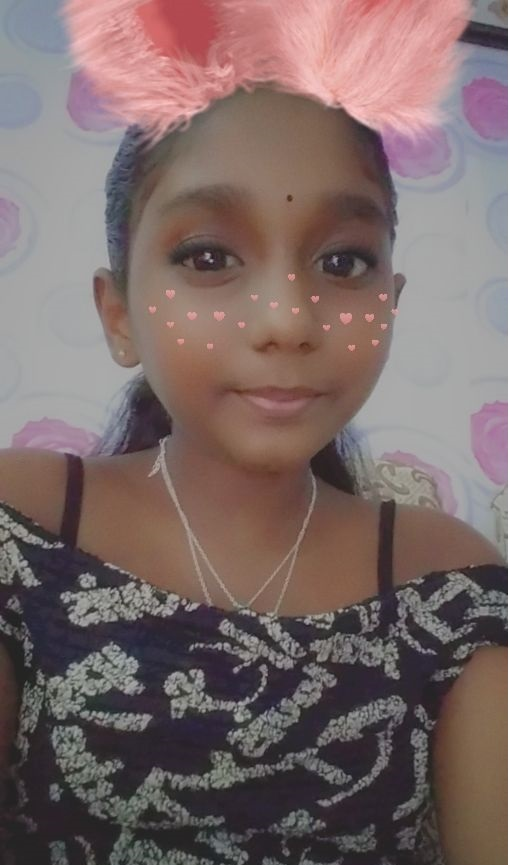
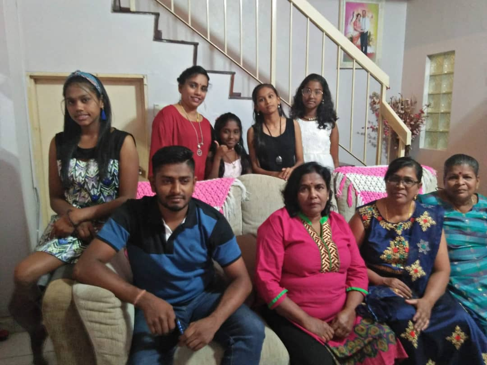

என் நினைவுகள்
நான் நினைவுற்றுமாக வைத்திருக்கும் சில புகைப்படங்கள் இங்கே



20 செப்டம்பர் 2019 அன்று, நான் எனது குடும்பத்துடன் கோலாலம்பூருக்குச் சென்றேன். அது ஒரு மகிழ்ச்சியான நாள், ஏனென்றால் என் குடும்பத்தினர் அனைவரும் பயணத்தில் சேர்ந்தனர்.
இரட்டை கோபுரம் கோலா லம்பூர்
கே.எல்.சி.சி, கே.எல்-டவர், ஹாட் ஸ்பிரிங், சில்க் குகைகள் கோயில் மற்றும் நீர்வீழ்ச்சி போன்ற பல இடங்களுக்குச் சென்றோம் .நாம் அனைவரும் ஒன்று கூடி இந்த தருணத்தை அனுபவிப்பதால் இது ஒரு மகிழ்ச்சியான உணர்வு.
செயல்பாடுகள்
மகிழ்ச்சியை எவ்வாறு தயாரிப்பது